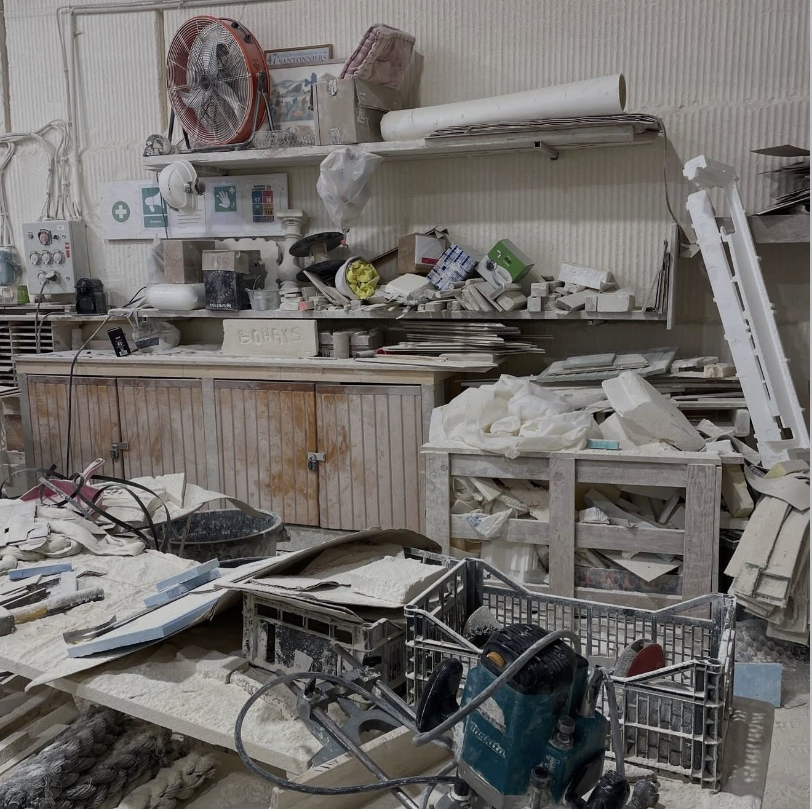

Materials, archives and images, read closely.


7
The materials of a region, 2026–
Bioregional research with Professor Jia Yi Gu
8
Anarchitecture, 2026
Installation plan for the Benton Museum of Art
9
An archive of voices, 2025–
3,000 documents and 120 hours of interviews, with Professor Isabel Balseiro
10
Papers in art history, soon
Pomona College